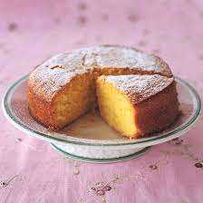

RECIPE FOR CAKE
- Step 1
Preheat the oven to 180°C (350°F). Grease and flour a cake pan.
- Step 2
In a bowl, cream the butter and sugar until light and fluffy.
- Step 3
Add eggs one at a time, beating well after each addition.
- Step 4
Mix in the vanilla extract.
- Step 5
In a separate bowl, combine flour, baking powder, and salt.
- Step 6
Gradually mix the dry ingredients into the wet mixture, alternating with milk, until smooth.X
- Step 7
Pour the batter into the pan and bake for 30–35 minutes, or until a toothpick inserted in the center comes out clean.
- Step 8
Let the cake cool, then slice and serve as is — or frost if desired.